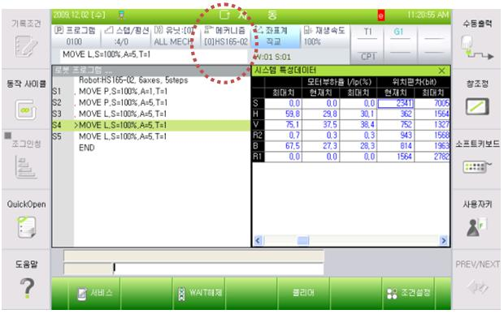

Warning
Be cautious. Examination while the power is on may cause an electrocution.
Previous error code: E0165 (○ axis) Impossible to sustain the servo lock
1.1.70.1. Outline
The motor or the drive unit does not receive a supply of current for driving at a regulated or higher level. As the current, which was generated through the servo control to operate the robot or the drive unit, is not supplied at a regulated level, the servo board detects the error and the controller prevents the release of the brake, cutting off the current to the motor or the drive unit.
The general reason that the current does not flow at a regulated or higher level is because the current loop gain is low due to an error in robot registration (error with the motor registration information).
1.1.70.2. Causes and examine methods
|
(1) Check if the correct robot type is set.
(2) Examine the motor power line. n Check the wiring that connects the robot and controller. n Check the robot’s internal wiring. n Check the controller’s internal wiring.
(3) Check the CNBS cable between the servo board and the servo AMP inside the controller.
(4) Replace other components. |
(1) Check if the correct robot type is set.
Check if the type of the robot registered in the TP screen and the robot match.

(2) Examine the power line
Please turn off the primary power and remove the U, V, and W of drive unit for the corresponding axis and examine if short circuit exists in each phase. Please use equipment such as the multi meter (tester) and examine each phase’s wiring one by one.
|
Warning Be cautious. Examination while the power is on may cause an electrocution. |
n Check the wiring that connects the Robot and Controller
Please remove the wirings that connect the controller, Robot or the drive unit to examine each phases (U, V, W) for ground, or a short circuit. If a short circuit is found, please replace the wire.

Figure 1.206 Basic Installation Diagram of the Robot and Control Period
n Check the Robot’s internal wiring.
Examine for a short circuit, faulty on a wiring that connected to Robot’s internal motor is required.

Figure 1.207 Robot’s Internal Wiring
n Check the Controller’s internal wiring.
Examine on a controller’s internal AMP and installed wiring is required.

Figure 1.208 Controller internal side (Power unit)
(3) Examine the CNBS cable between the controller’s internal servo board (DSP board) and the drive unit.
Please examine if the CNBS cable is installed properly. If the cable is not installed properly, or the cable is faulty, this error may occur.

Figure 1.209 Controller internal side (CNBS Cable)
(4) Replace other components.
Replace the component in order of Servo Board → Servo Drive Unit → Motor to confirm the occurrence of an error’.

Figure 1.210 Replacing other parts (such as servo boards, servo drive units, and motors)